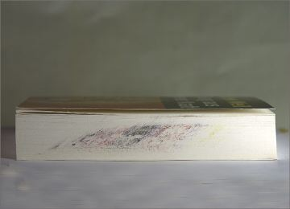
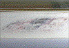
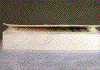
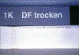
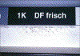

VERSCHMIEREN AM BESCHNITT
|
Während des Dreiseiten-Beschnitts wird in
unregelmäßigen Abständen durch das
Messer eine gefärbte Schicht auf die
Schneidkanten partiell verteilt, so dass die
Broschuren unansehnlich und teilweise
unverkäuflich werden. Bei vollflächig bis
an die Ränder bedruckten Umschlägen wird
die verschmierte Schicht am deutlichsten sichtbar
(Abb. 1 und Abb. 2). Der Fehler tritt
ausschließlich bei Broschuren mit
folienkaschierten Umschlägen auf.
|

|
Abb. 1: Verschmieren am Beschnitt.
|
|
|
|
Mögliche Ursachen:
|
|

|
|
Abb. 2: Verschmieren am Beschnitt
(Ausschnittsvergrößerung).
|
|
|
|

|
|
Abb. 3: Verbesserung des Schnittbildes durch
hohen Anpressdruck.
|
|
|
|

|
|
Abb. 4: Schneidversuch an 1K-Kaschierung
(Druckfarbe trocken).
|
|
|
|

|
|
Abb. 5: Schneidversuch an 1K-Kaschierung
(Druckfarbe frisch).
|
|
|
|
|
|
Abb. 6: Schneidversuch an 2K-Kaschierung
(Druckfarbe frisch).
|
|
|
|

|
|
|
|
|
|

|
|
|
|
|
|

|
|
|
|
|
|
|
Der Fehler tritt ausschließlich bei Broschuren mit
folienkaschierten Umschlägen auf.
Untersuchungen in der FOGRA haben gezeigt, dass der
Trockenzustand der Druckfarben, die Messerschärfe, der
Klebstofftyp bzw. dessen Aushärtungsgrad entscheidende
Einflussfaktoren für ein Verschmieren am Beschnitt
sind.
Schneidversuche haben gezeigt, dass sich frisch
verarbeitete, also nicht ausgehärtete 1K-und
2K-Kaschierklebstoffe beim Beschneiden gleich verhalten.
Beide neigen zu diesem Verarbeitungszeitpunkt zum
Verschmieren. Nach der Aushärtungsphase zeigte sich bei
den untersuchten 2K-Klebstoffen nur noch eine
geringfügige Tendenz zum Verschmieren.
Die derzeit eingesetzten 2K-Systeme erreichen allerdings
nicht mehr den hohen Vernetzungsgrad der früheren
Epoxidsystemen (auf Grund allergener Wirkung der Epoxide
werden diese heutzutage in Kaschierbetrieben vermieden). Die
heute eingesetzten zweikomponentigen Klebstoffe können
somit eine gewisse Restklebrigkeit behalten.
Weiterhin konnte bei allen Versuchen beobachtet werden, dass
der Aufbau der klebrigen Substanz auf dem Schneidmesser und
die Abgabe an die Broschur zwei voneinander unabhängige
Vorgänge sind. Die Anlagerung an das Messer ist ein
kontinuierlicher Vorgang, während das Verschmieren auf
der Schnittkante eher zufällig abläuft, wenn
beispielsweise eine bestimmte Schichtdicke erreicht wurde
oder unterschiedliche Papiereigenschaften (z. B.
Kompressibilitätsunterschiede) im Textteil der Broschur
zu minimalen Stufenbildungen führen. Beim Schneiden von
Stapeln aus „hartem" (gestrichenem) Papier werden die
Verunreinigungen schneller wieder an die Schneidkante
abgegeben, was optisch weniger auffällig ist. Bei
„weichem" Papier kann sich dagegen eine
größere Menge an klebendem Material am Messer
anreichern, bevor es wieder abgegeben wird.
Ein höherer Anpressdruck, möglichst nahe am
Beschnitt, verringert die relative Menge an Ablagerungen am
Schneidmesser. Eine bestehende Tendenz zum Verschmieren an
den Schneidkanten kann dadurch aber nicht gestoppt werden
(Abb. 3).
|
Mögliche Abhilfen:
|
|
Um diese Fehlererscheinung so weit wie möglich
auszuschließen, empfiehlt sich für den
Kaschiervorgang der Einsatz von 2K-Klebstoffen. Neben der
richtigen Auswahl des Kaschier-Klebstoffes sollte dem
Kaschierverbund der nötige Zeitraum zur
vollständigen Aushärtung gegeben werden. Der
Zeitraum zwischen Kaschiervorgang und dem
Dreiseiten-Beschnitt sollte dabei in etwa 48 Stunden
betragen.
Sollte aus termintechnischen Gründen diese
Aushärtungsphase nicht eingehalten werden können,
kann als mögliche Abhilfemaßnahme ein
ständiges Nachputzen des Schneidmessers zu einer
Verringerung des Verschmierens beitragen. Dies ist jedoch
sehr zeit- und kostenintensiv.
|
Beispiel(e):
|
|
Um den Einfluss des Trockenzustandes der Druckfarben zu
untersuchen, wurden Druckbogen, die zwei Wochen lang
getrocknet wurden mit einkomponentigem Klebstoff kaschiert
und am darauffolgenden Tag Schneidversuche an diesen Bogen
durchgeführt.
Gleichzeitig wurden auch 1K- und 2K-Kaschierungen mit in die
Versuche eingebunden, die kurz nach dem Druck kaschiert und
über einen längeren Zeitraum zwischengelagert
wurden.
Nach dem Beschnitt konnten die drei Varianten daraufhin
direkt hinsichtlich eines möglichen Verschmieren am
Beschnitt verglichen werden. Die Abbildungen 4 und 5 zeigen
die Ergebnisse der Scheideversuche mit 1K-Kaschierungen.
Dabei zeigt sich sowohl bei der getrockneten Druckfarbe als
auch bei der frischen Druckfarbe ein deutliches Verschmieren
am Beschnitt, wobei frische, nicht durchgetrocknete
Druckfarben deutlich mehr zum Verschmieren am Beschnitt
neigen als durchgetrocknete Systeme (Abb. 4 und Abb. 5).
Erwartungsgemäß traten bei den Versuchen mit
ausgehärteten 2K-Produkten keinerlei Verschmierungen am
Beschnitt auf. Die Schneidversuche an den 2K- Kaschierungen
auf frischen Druckfarben zeigten leichtes Verschmieren am
Beschnitt (Abb. 6).
|
Allgemeine Hinweise:
|
|
Für den Reklamationsfall:
Beschädigte Muster sicherstellen.
Ergänzende Literatur:
KUEN, Th.; HUNDSDORFER, O.:
Anforderungen an die Glanzfolienkaschierung für
Umschläge und Buchdecken.
Wiesbaden/München: Bundesverband Druck und Medien e.V.
/ FOGRA, 1998 (72.002) - Forschungsbericht
|
|
|
|
|
|
|
Kontakt:
kuen@fogra.org
|
Ver-kue-200111
|